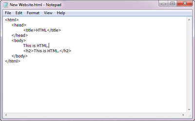
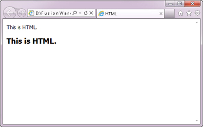

BASIC HTML
HTML หรือชื่อเต็มๆ ก็คือ Hypertext Markup Language เป็นภาษาประเภท Markup ที่ออกแบบมาเพื่อใช้ในการสร้างเว็บเพจ มีโครงสร้าง
การเขียนโดยอาศัยตัวกำกับ (Tag) ควบคุมการแสดงผลข้อความ รูปภาพ เสียง อื่นๆ ที่สามารถเรียกดูผ่านทางเว็บเบราว์เซอร์ได้ แต่ละ Tag
สามารถระบุหรือควบคุมการแสดงผลของเว็บให้เป็นไปตามที่ผู้ออกแบบเว็บไซต์กำหนดไว้ หรือจะให้เข้าใจง่ายๆ ก็คือ เว็บที่เราเข้าอยู่ในทุกๆ
วันนี้ ก็ล้วนถูกแสดงผลด้วยโค้ด HTML ทั้งนั้น
HTML พัฒนามาจากภาษา SGML และถูกพัฒนามาเรื่อยๆ ตั้งแต่เวอร์ชั่นแรก สู่เวอร์ชั่น HTML 2.0, HTML 3.2, HTML 4.1 และตัวล่าสุด
คือ HTML 5 (ซึ่งอยู่ในระหว่างการพัฒนา) และยังมีการพัฒนารูปแบบของ HTML แบบใหม่ที่เรียกกันว่า XHTML ซึ่งมีความสามารถและ
มาตรฐานที่รัดกุมกว่าอีกด้วย
HTML มีรูปแบบการทำงานง่ายๆ HTML จะอ่านจากซ้ายไปขวา จากบนลงล่าง เมื่อเราพิมพ์ข้อความตัวอักษรธรรมดาลงไปแล้วทำการ
บันทึก พอเราเปิดไฟล์นั้นๆ มาดูผลลัพธ์ที่จะแสดงผลที่หน้าจอก็จะเป็นเหมือนตอนที่พิมพ์ข้อความตัวอักษรธรรมดาลงไป หากต้องการผลลัพธ์
ที่แตกต่างต้องใช้ Tag ในการควบคุมการแสดงผล
ตัวอย่าง CODE ภาษา HTML

จากภาพจะเห็นว่า… HTML มีรูปแบบการเขียนที่ชัดเจน จะประกอบด้วย Tag พื้นฐาน ในการเขียน Web
ผลลัพธ์หน้าจอแสดงผล

ในการสร้าง Web Page ด้วยภาษา HTML นั้น สามารถใช้โปรแกรม Text Editor ต่างๆ เขียนได้ เช่น NotePad , Word Pad ฯลฯ หรือจะใช้
โปรแกรมประเภท WYSIWYG (What You See Is What You Get) ที่เป็นเครื่องมือช่วยสร้างเว็บเพจซึ่งอํานวยความสะดวกในการสร้างหน้า HTML
เช่น Dream Weaver, Microsoft FrontPage ฯลฯ
ส่วนในการเรียกใช้งานหรือทดสอบการทำงานของเอกสาร HTML ที่เราได้เขียนไว้นั้นจะใช้โปรแกรมเว็บเบราว์เซอร์ (web browser)
เช่น Internet Explorer (IE), Google Chrome, Mozilla Firefox, Safari และอื่นๆ เป็นต้น เป็นเครื่องมือแสดงผลไฟล์ HTML ของเราออกมาเป็น
ตัวอักษร ภาพและเสียง
ที่มา : http://www.fusionidea.biz/html-คืออะไร/#prettyPhoto